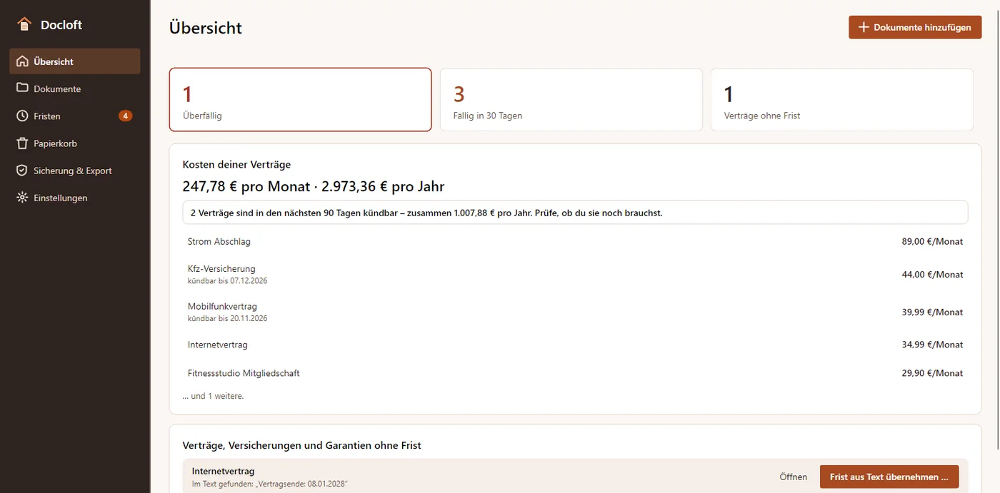
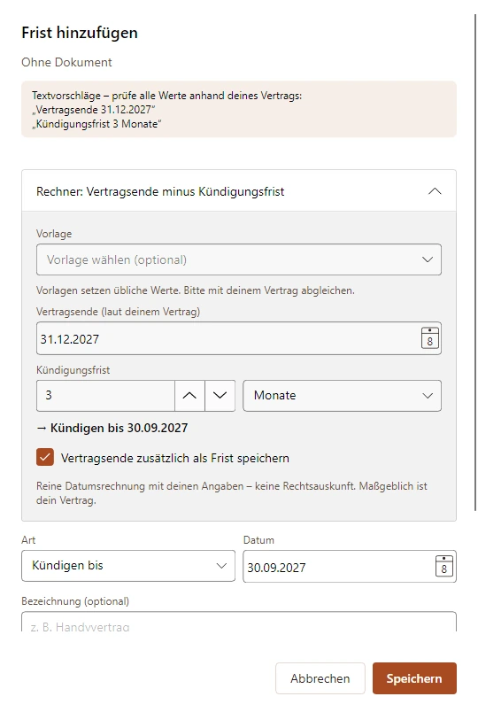
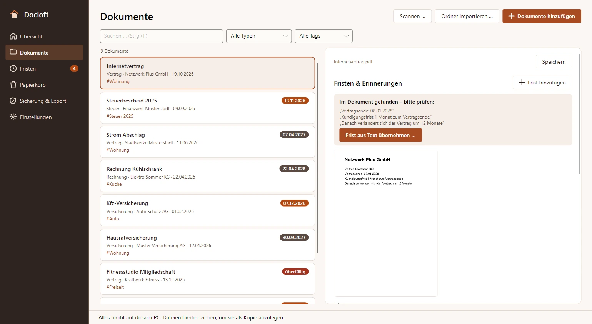
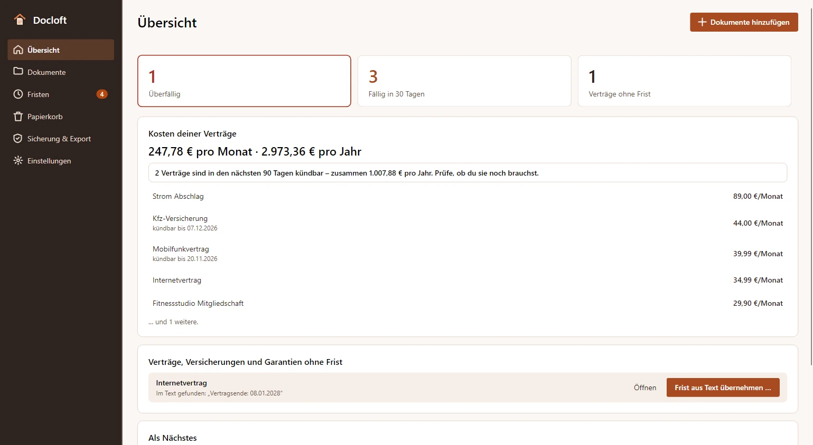
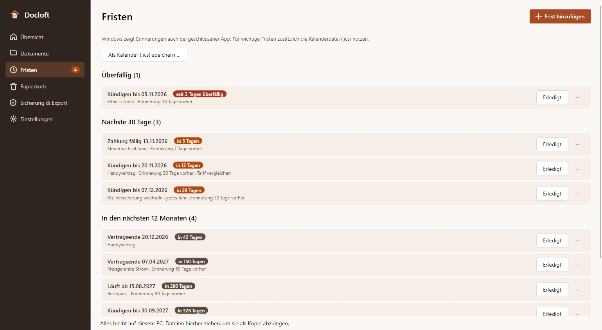
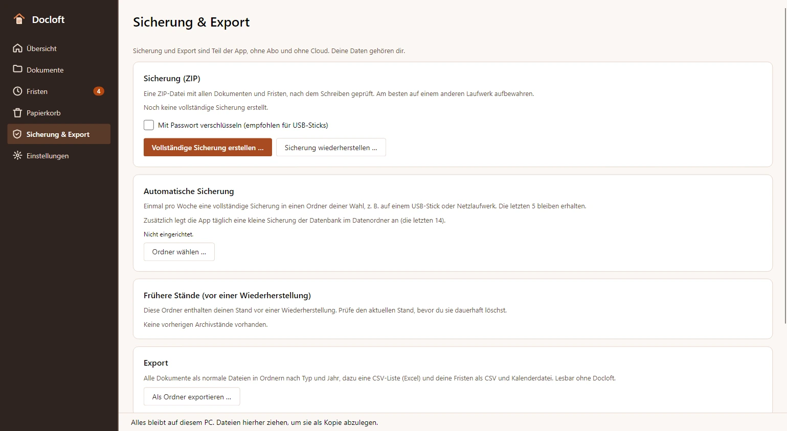
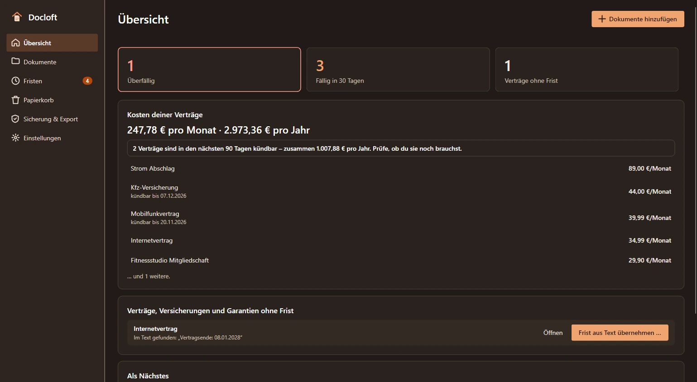

Kosten im Blick
Was deine Verträge im Monat und im Jahr kosten – und welche du in den nächsten 90 Tagen kündigen könntest.
Fristen- und Vertragsordner für Windows
Verträge, Rechnungen und wichtige Schreiben an einem Ort auf deinem PC. Lege Kopien ab, erkenne Text offline und behalte deine Fristen im Blick. Ohne Konto, ohne Cloud.
Bald im Microsoft StoreSo funktioniert’s

PDFs, Scans und Handyfotos per Drag-and-drop oder als ganzen Ordner hinzufügen. Docloft prüft die Kopie und erkennt doppelte Dateien.
Text offline erkennen lassen, Vorschläge für Typ, Datum und Absender prüfen und Tags ergänzen. Du entscheidest, was gespeichert wird.
Mit Wortanfängen oder ohne Umlaute suchen. Fristen eintragen und den gewünschten Vorlauf für Windows-Benachrichtigungen wählen.
Was deine Verträge im Monat und im Jahr kosten – und welche du in den nächsten 90 Tagen kündigen könntest.
Mit Vertragsnummer und Termin, fertig zum Prüfen, Kopieren oder Mailen. Verschickt wird nur, was du selbst sendest.
Kündigen-bis, Vertragsende, Garantie, Zahlung oder Ablauf: Überfälliges und die nächsten 30 Tage auf einen Blick.
Vertragsende minus Kündigungsfrist ergibt dein Kündigen-bis-Datum. Vorlagen für Handy, Strom oder Versicherung setzen übliche Werte vor – du gleichst sie mit deinem Vertrag ab.
Windows-Benachrichtigungen mit frei wählbarem Vorlauf. Eine stets aktuelle Kalenderdatei bringt die Fristen auch in Outlook und aufs Handy.
Windows-OCR macht Scans und Fotos durchsuchbar – Suche mit Wortanfängen und ohne Umlaute.
Keine Cloud, kein Konto, keine Werbung und kein Tracking. Deine Dokumente liegen als normale Dateien auf deiner Festplatte.
Docloft arbeitet mit geprüften Kopien. Deine Originaldateien werden weder verändert noch verschoben oder gelöscht.
Bei Nutzung erstellt die App höchstens einmal täglich eine Datenbanksicherung. Sie enthält keine Dokumentdateien; erstelle eine vollständige ZIP-Sicherung und bewahre eine Kopie auf einem anderen Laufwerk auf.
Vom Import zur Sicherung: Text prüfen, Kündigen-bis berechnen und die bestätigte Frist im Blick behalten.






Einmalig 24,99 € im Microsoft Store, kein Abo.
Updates für Version 1 inklusive. Sicherung – auf Wunsch verschlüsselt – und Export sind Teil der App; deine Daten gehören dir.
Bald im Microsoft Store
Einmalig 24,99 € im Microsoft Store, kein Abo, Updates für Version 1 inklusive. Für Rückgaben gelten die Bedingungen des Microsoft Store.
Ja. Docloft legt eine geprüfte Kopie ab und lässt die Originaldatei unverändert an ihrem bisherigen Ort.
Lokal auf deinem PC unter %LOCALAPPDATA%\MinhStudios\Docloft. Die Dokumentkopien liegen als normale Dateien auf deiner Festplatte; es gibt keine Cloud-Synchronisierung.
Sie läuft lokal mit Windows-OCR und den installierten Windows-Sprachpaketen. Ein installiertes Tesseract kann als Ausweichlösung dienen.
Windows kann geplante Erinnerungen auch bei geschlossener App anzeigen. Aktiviere Windows-Benachrichtigungen. Bis zu 200 Erinnerungszeitpunkte werden innerhalb von 400 Tagen geplant; öffne die App regelmäßig, um die Planung zu aktualisieren. Die Daten stammen aus deinen Eingaben; bitte prüfe sie.
Nein. Die App speichert deine Angaben und rechnet damit. Sie prüft keine gesetzlichen Fristen, Vertragsbedingungen oder Aufbewahrungspflichten und bietet keine Rechts- oder Steuerberatung.
Ja, mit einem Passwort (AES-256), auch bei der wöchentlichen automatischen Sicherung. Ohne das Passwort lässt sich die Sicherung nicht öffnen – auch nicht durch uns. Notiere es sicher.
So findest du das Kündigen-bis-Datum: Vertragsende minus Kündigungsfrist, mit Beispiel, Stolperfallen und Tipps, damit du die Frist nicht verpasst.
Verträge und Kündigungsfristen nicht mehr verpassen: Übersicht anlegen, Erinnerungen setzen, Kosten zusammenrechnen. Mit Tipps für Liste, Kalender und Windows-PC.
Papierkram digitalisieren ohne Cloud: Dokumente scannen, per Texterkennung (OCR) durchsuchbar machen und sinnvoll benennen und ablegen. Mit Tipps für Windows.